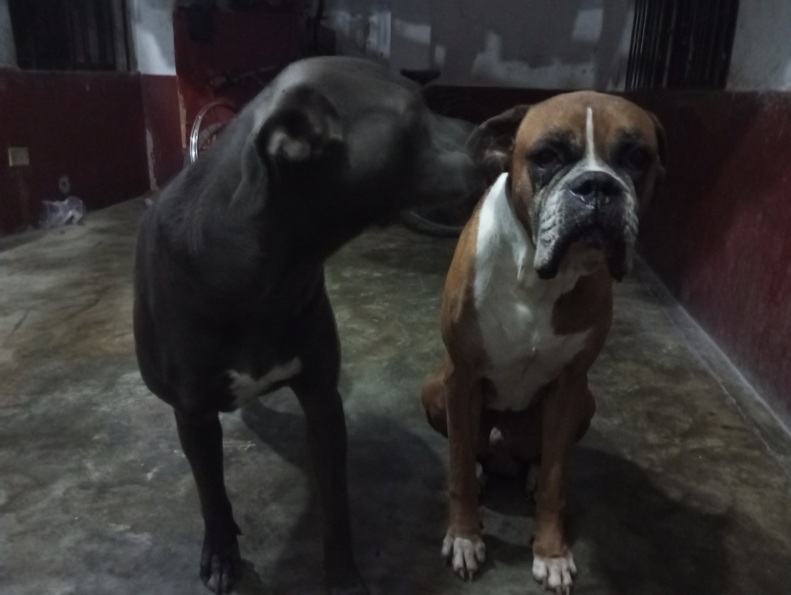
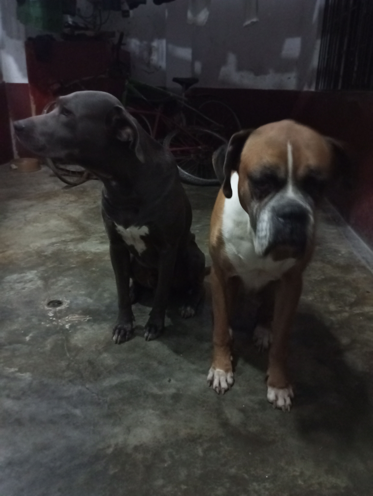
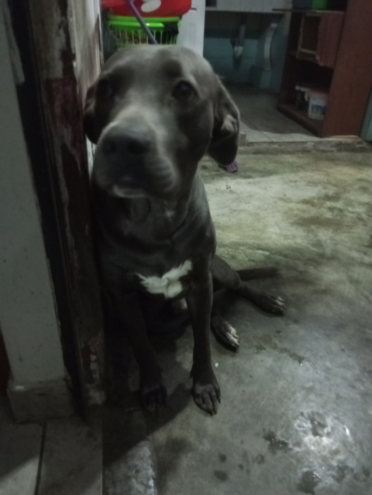
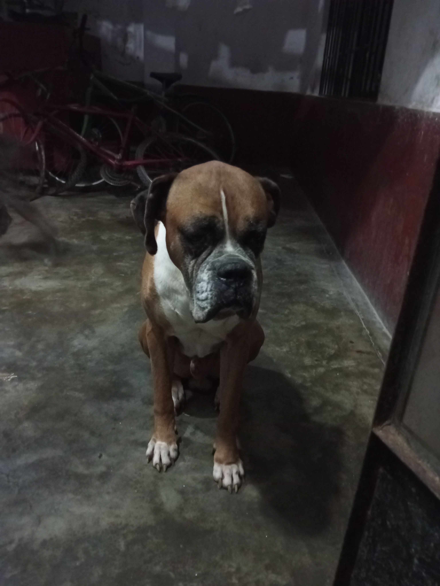

La vida de Amadeus y Ramses
Amadeus y Ramses son dos adorables mascotas nacidas en Lima, Perú, que pertenecen a su dueño, Harold. Amadeus nació el 28 de diciembre de 2015, y es conocido por su carácter alegre y juguetón. Ramses, por otro lado, nació el 31 de enero de 2021, y es más tranquilo y sereno. Ambos disfrutan de la vida en la vibrante ciudad de Lima, donde reciben todo el amor y cuidado de Harold.
Harold tiene una gran pasión por la música de Beethoven, especialmente por sus piezas para piano. Además, le interesa el dinero, lo que probablemente refleja una faceta de su personalidad orientada hacia los negocios o las finanzas. Amadeus y Ramses comparten una fuerte conexión con Harold, creando un vínculo especial que se fortalece día a día.
un paseo. Como de costumbre, Ramsés caminaba despacio, olfateando cada planta y rincón, mientras que Amadeus corría alegremente de un lado a otro. En medio de su exploración, Ramsés encontró un pequeño sendero que se adentraba en un área más frondosa del parque. Con su espíritu curioso, decidió seguir el camino. El sendero lo llevó a un pequeño jardín secreto, lleno de flores y árboles frutales. Ramsés se detuvo a contemplar el lugar, fascinado por su belleza y tranquilidad. En el centro del jardín, había un pequeño estanque con peces dorados nadando. Ramsés, maravillado, se acercó lentamente y se quedó observando a los peces, encantado por sus movimientos. Mientras tanto, Harold y Amadeus se dieron cuenta de la ausencia de Ramses y comenzaron a buscarlo. Después de unos minutos de búsqueda, encontraron el sendero y siguieron sus huellas hasta llegar al jardín secreto. Allí encontraron a Ramsés, sentado pacíficamente junto al estanque, con una expresión de asombro en su rostro. Harold se sintió aliviado al ver que Ramsés estaba a salvo y, al mismo tiempo, conmovido por la belleza del lugar que su mascota había descubierto. Desde ese día, el jardín secreto se convirtió en un lugar especial para Ramses y su familia.Harold y Amadeus lo visitaban con frecuencia, disfrutando de la paz y la belleza del lugar. Ramsés, siempre fiel a su naturaleza tranquila, se sentía en casa en aquel rincón escondido, donde podía relajarse y observar a los peces dorados en el estanque. La aventura de Ramsés no solo mostró su espíritu explorador, sino también su capacidad para encontrar la belleza y la paz en los lugares más inesperados. Esta historia se convirtió en un recuerdo preciado para Harold y su familia, recordándoles la importancia de la curiosidad y la serenidad en la vida.
Un día, Harold decidió organizar una pequeña reunión en su casa con algunos amigos para disfrutar de una tarde de música. Como fanático de Beethoven, había invitado a un amigo pianista para que tocara algunas de las composiciones más famosas del maestro. Amadeus, como siempre, estaba lleno de energía y muy curioso por la gente y las actividades en su hogar. Mientras el pianista se preparaba para tocar, Amadeus, intrigado por el sonido del piano, se acercó y se sentó junto al instrumento. Parecía fascinado por las teclas y los sonidos que salían de ellas. Cuando el pianista comenzó a tocar la Sonata para piano n.º 14, más conocida como "Claro de luna", Amadeus se quedó completamente inmóvil, como si estuviera cautivado por la música. Para sorpresa de todos, Amadeus comenzó a "acompañar" la música con suaves aullidos que, de alguna manera, parecían estar en sintonía con las notas del piano. Los invitados se quedaron asombrados y encantados por la inesperada "actuación" del perro. Su aullido suave y melódico parecía resonar con la emotividad de la pieza, creando una atmósfera mágica en la sala. Al final de la pieza, los aplausos no fueron solo para el pianista, sino también para Amadeus, quien se convirtió en el inesperado centro de atención. Harold, orgulloso y emocionado, acarició a Amadeus y le agradeció por añadir un toque especial a la velada. Desde ese día, Amadeus fue conocido como "el perro músico" entre los amigos de Harold. La historia del "Gran Concierto de Amadeus" se convirtió en una anécdota querida y frecuentemente recordada por todos los que estuvieron presentes. No solo mostró la sensibilidad especial de Amadeus hacia la música, sino que también dejó una lección sobre cómo las pequeñas sorpresas de la vida pueden crear momentos inolvidables.